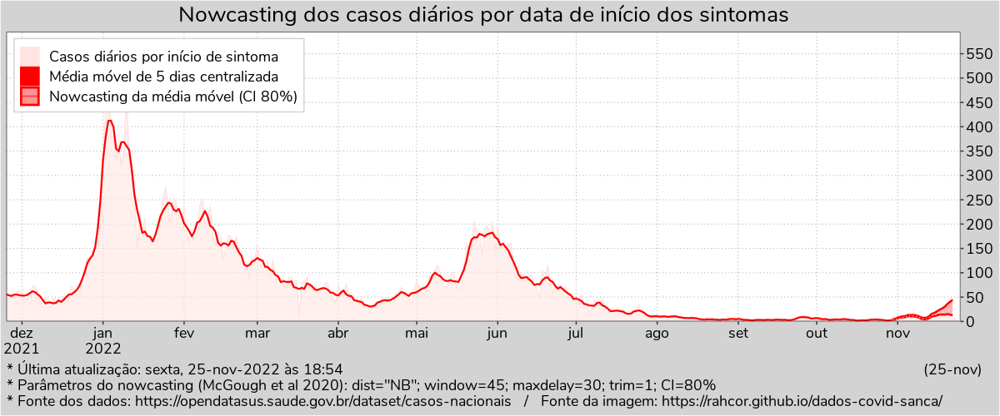

Atenção! Como os casos foram controlados devido à vacinação, decidi por encerrar as atualizações automáticas. Um abraço e agradeço as pessoas que acompanharam o site! Para se manterem atualizados(as) da situação, sugiro que acompanhem os casos de hospitalizações no estado de SP (clique aqui) feita pelo pesquisador Leonardo Bastos da Fiocruz, o qual inclui nowcasting. A atualização é semanal.

No gráfico acima, a região em que a linha está duplicada se refere aos casos sujeitos à atrasos que foram estimados com a técnica de nowcasting. A distância entre as linhas representa um intervalo de incerteza para os possíveis valores da estimativa.
A técnica de nowcasting é uma estimativa estatística dos casos sintomáticos que ainda não foram registrados até a data de hoje por motivo de atrasos. Exemplos de atrasos: a pessoa ainda não visitou um posto de saúde, o laboratório ainda não entregou o resultado do teste, o resultado ainda não foi registrado no sistema de notificação, entre outros. O nowcasting não prevê casos de subnotificação. Esse é o mesmo tipo de nowcasting que o divulgador científico Átila Iamarino usou em seus vídeos publicados no YouTube, porém aqui a estimativa é restrita somente aos casos de pessoas sintomáticas testadas positivas para covid-19 no município de São Carlos-SP a partir da data dos primeiros sintomas.
Siga esse link para ir à Página de detalhamento do método de nowcasting.
Dados de síndrome gripal do OpenDataSUS: https://opendatasus.saude.gov.br/dataset/casos-nacionais
Script em R para nowcasting e atualização dos gráficos: autoupdate-now-20210717.R
Arquivo com todos os dados coletados: db-sintomas.json
Construído com R e bibliotecas, pandoc, water.css e MathJax.